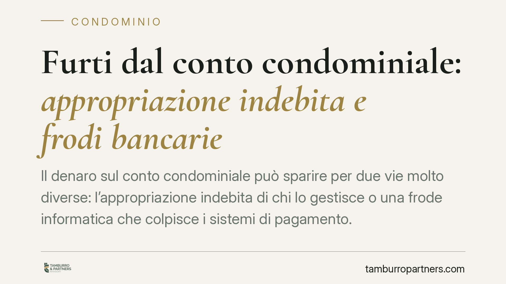

Furti dal conto condominiale: appropriazione indebita e frodi bancarie
Il denaro sul conto condominiale può sparire per due vie molto diverse: l'appropriazione indebita di chi lo gestisce o una frode informatica che colpisce i sistemi di pagamento. Cambiano le norme applicabili, i soggetti responsabili e soprattutto i tempi per reagire. Comprendere la distinzione è il primo passo per recuperare le somme e individuare chi deve risponderne.

Due scenari da non confondere
Quando dal conto corrente di un condominio spariscono delle somme, le cause possibili rientrano in due categorie profondamente diverse sul piano giuridico.
Nel primo caso il denaro viene sottratto dall'interno, cioè da chi ha il potere di disporne: tipicamente l'amministratore. Nel secondo caso l'aggressione arriva dall'esterno, attraverso una frode informatica (phishing, sostituzione di coordinate bancarie, accessi abusivi).
I rimedi, i responsabili e i termini per agire non coincidono. Trattarli come un unico problema è l'errore più frequente.
L'appropriazione indebita dell'amministratore
Se l'amministratore utilizza per sé il denaro del condominio, o lo distrae verso finalità estranee, si configura il reato di appropriazione indebita previsto dall'art. 646 c.p.
Il presupposto è che l'amministratore abbia il possesso legittimo delle somme in ragione del proprio incarico, e ne faccia un uso che equivale a farle proprie.
Sul piano della procedibilità occorre un chiarimento, perché incide direttamente sulle mosse da compiere. Dopo le modifiche introdotte dalla L. 3/2019, l'appropriazione indebita è di regola procedibile a querela della persona offesa. Diventa invece procedibile d'ufficio quando ricorre l'aggravante dell'abuso di relazioni di prestazione d'opera prevista dall'art. 61 n. 11 c.p., situazione che la gestione fiduciaria del denaro condominiale può in concreto integrare.
La differenza è pratica: dove la procedibilità è a querela, esiste un termine di tre mesi dalla conoscenza del fatto per presentarla. Lasciarlo decorrere può precludere l'azione penale.
Sul piano civile va ricordato l'art. 1129 c.c., che impone all'amministratore di far transitare le somme del condominio su un conto corrente intestato al condominio stesso. La violazione di questo obbligo, oltre a costituire giusta causa di revoca, agevola le condotte di distrazione e va considerata un segnale d'allarme.
Le frodi informatiche e il ruolo della banca
Il secondo scenario riguarda le operazioni non autorizzate frutto di frode esterna. Qui la disciplina di riferimento è il D.Lgs. 11/2010, come modificato dal D.Lgs. 218/2017 che ha recepito la direttiva europea sui servizi di pagamento (PSD2).
Due norme sono decisive. L'art. 10 pone a carico dell'intermediario bancario l'onere di provare che l'operazione contestata è stata autenticata e correttamente registrata. L'art. 12 regola la ripartizione del danno in caso di operazioni non autorizzate: in linea di principio l'utente sopporta una franchigia limitata, mentre il resto grava sull'intermediario, salvo che quest'ultimo dimostri il dolo o la colpa grave del cliente nella custodia degli strumenti di pagamento.
La dinamica dell'onere probatorio è quindi favorevole all'utente: non è il condominio a dover provare di essere estraneo alla frode, ma la banca a dover dimostrare l'autenticazione dell'operazione e, per liberarsi, la colpa grave del cliente.
Su questi profili si è formata una giurisprudenza dell'Arbitro Bancario Finanziario che tende a riconoscere ipotesi di concorso di colpa, valorizzando sia l'adeguatezza dei presidi di sicurezza dell'intermediario sia la diligenza dell'utente. Si tratta di un orientamento consolidato nella sua logica di fondo; le singole decisioni vanno però verificate caso per caso, perché la valutazione è fortemente ancorata ai fatti.
Cosa cambia per il condominio
Per i condomini la conseguenza pratica è duplice. Se la sottrazione è interna, il rimedio passa per la querela, l'azione civile di responsabilità e la revoca dell'amministratore. Se è esterna, il fronte principale è il reclamo all'intermediario e l'eventuale ricorso all'ABF.
In entrambi i casi il fattore critico è il tempo: termini brevi per la querela, termini stringenti per contestare alla banca le operazioni non riconosciute.
Cosa fare in concreto
- Verificate l'intestazione del conto: accertatevi che sia intestato al condominio ex art. 1129 c.c. e richiedete periodicamente gli estratti conto.
- Agite subito in caso di operazione sospetta: segnalate senza indugio all'intermediario l'operazione non autorizzata, per iscritto e con data certa, attivando il blocco degli strumenti di pagamento.
- Conservate ogni documento: estratti conto, comunicazioni, ricevute e tracce informatiche delle operazioni contestate costituiscono materiale probatorio essenziale.
- Rispettate i termini della querela: in caso di condotta riconducibile all'amministratore, valutate la presentazione della querela entro tre mesi dalla conoscenza del fatto, salvo ipotesi di procedibilità d'ufficio.
- Portate la questione in assemblea con il supporto adeguato: la revoca dell'amministratore e le azioni di recupero vanno deliberate su basi documentate e giuridicamente corrette.
La sovrapposizione tra profilo penale, civile e bancario rende utile un'analisi preliminare prima di agire, per non disperdere tutele e termini.
Contributo informativo a cura di Tamburro & Partners - Avv. Giuseppe Tamburro. Non costituisce parere legale.
Ogni condominio ha una storia a sé.
Se gestisci un'amministrazione e vuoi un confronto su una specifica questione condominiale, scrivi allo studio. Ti rispondiamo entro un giorno lavorativo.